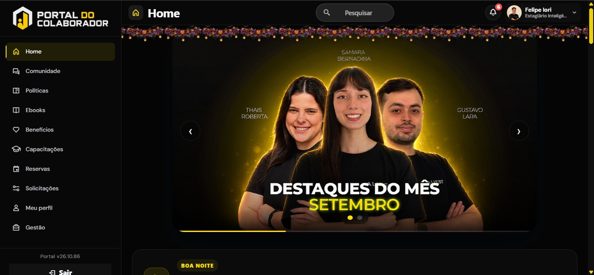
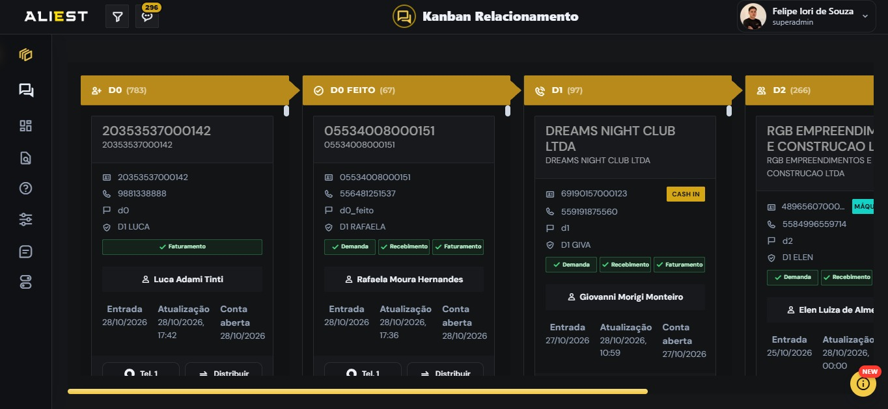
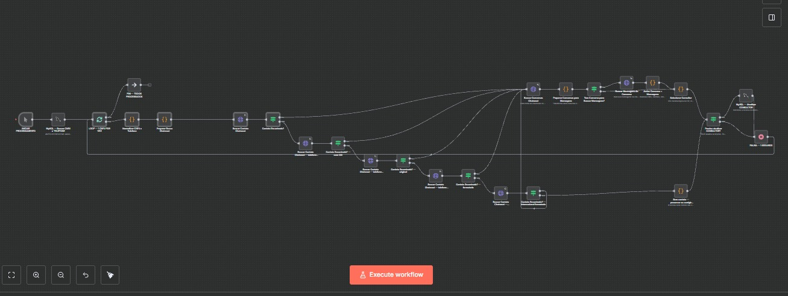
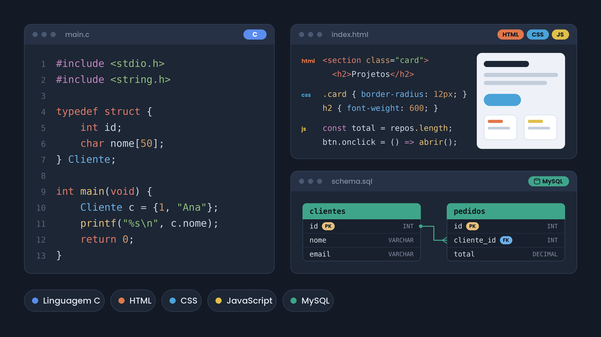

Portal do Colaborador
Conteúdos, capacitação e onboarding em um só lugar para os colaboradores da Aliest.

Sou desenvolvedor de software e gosto de construir soluções que conectam pessoas, dados e processos.
Formado em Análise e Desenvolvimento de Sistemas pelo SENAI, estudo Engenharia de Software na Universidade Positivo e atuo como estagiário em Automação e Dados na Aliest.
Conteúdos, capacitação e onboarding em um só lugar para os colaboradores da Aliest.

Uma operação de relacionamento mais organizada, com Kanban, mensagens e integração ao Chatwoot.

Um workflow que conecta dados e APIs para distribuir atendimentos com regras de negócio.

Vamos conversar sobre tecnologia?
Entre em contatoSou desenvolvedor de software, formado em Análise e Desenvolvimento de Sistemas pelo SENAI e atualmente estudante de Engenharia de Software na Universidade Positivo.
Moro em Curitiba, Paraná, e estou construindo minha trajetória profissional em tecnologia, com foco em desenvolvimento de software e evolução contínua.
Meu currículoUniversidade Positivo
SENAI
Wizard · Nível B1
Aliest · Estágio
out. de 2026 – atual
Curitiba, Paraná, Brasil · No local
Plataforma interna para centralizar conteúdos, informações e recursos destinados aos colaboradores.
Plataforma interna para centralizar a operação de relacionamento com clientes, atendimentos e indicadores.
Repositório com materiais e conteúdos desenvolvidos durante os estudos.

Workflow desenvolvido em n8n para integrar dados, consultar conversas via API e realizar distribuições automáticas com base em regras de negócio.
Vamos conversar? Entre em contato para conversas profissionais, projetos e oportunidades.